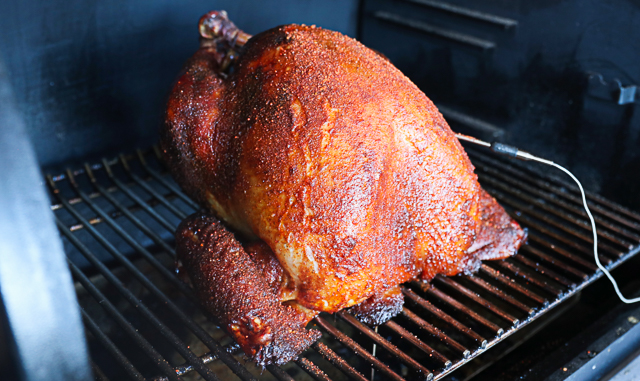

Smoked Tukey
Description
A perfect way to change up the holiday dinner!
Ingredients
- (12 pound) whole turkey, thawed if frozen, neck and giblets removed
- 3/4 cup kosher salt
- 3/4 cup unsalted butter, melted
- Place turkey in a roasting pan. Rub salt all over and inside turkey. Let sit for 1 hour.
- Preheat smoker to 250 degrees F (120 degrees C). If your smoker is equipped with a water pan, fill it.
- Rinse salt off turkey and pat dry with paper towels. Return to roasting pan and baste with melted better. Cover with aluminum foil and place in smoker.
- Cook for about 3 hours; remove aluminum foil. Continue to cook, uncovered, until an instant-read thermometer inserted into the thickest part of the turkey thigh reads 165 degrees F (74 degrees C), 3 to 3 1/2 hours.
- Remove turkey from the smoker and tent with aluminum foil. Let it rest in a warm area before slicing, 45 to 60 minutes.